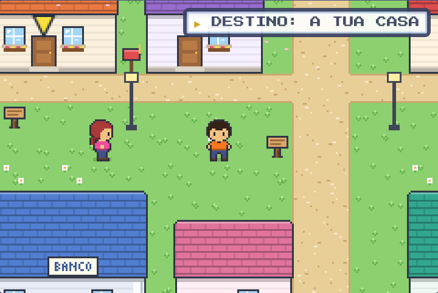
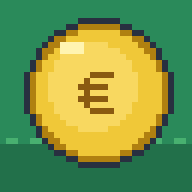
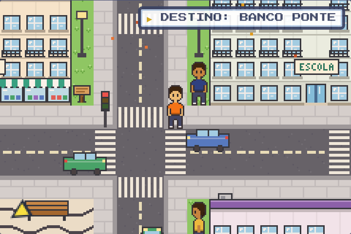
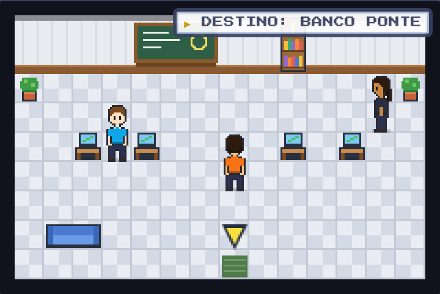
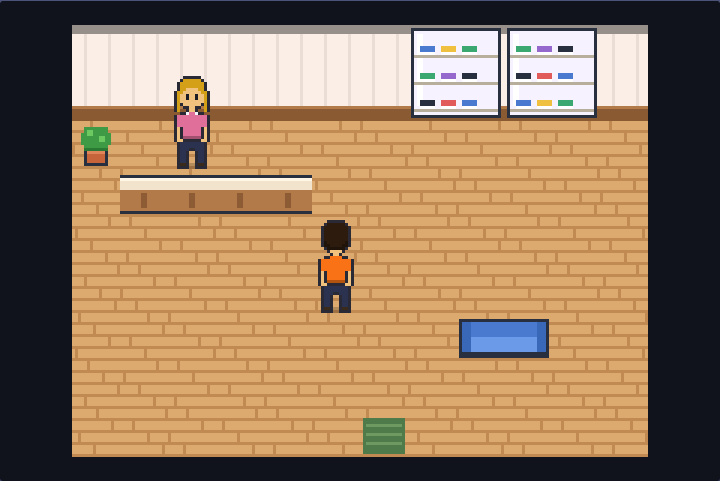
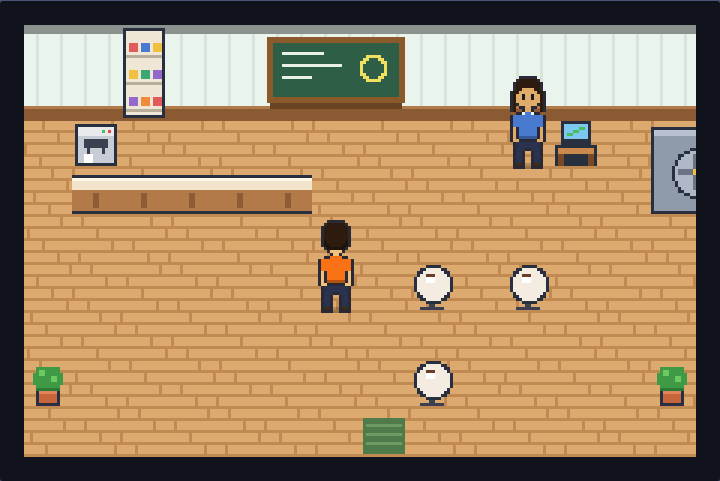
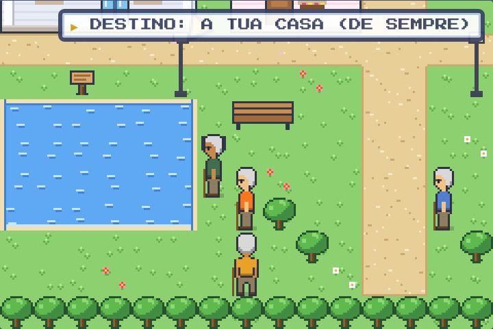
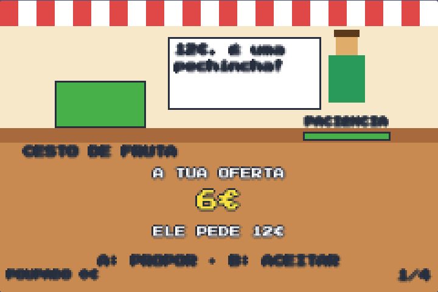

8–11 anos

Um jogo gratuito de literacia financeira, ao estilo Game Boy, que acompanha a mesma personagem dos 8 anos até à reforma.
A literacia financeira é uma das prioridades do Plano Nacional de Formação Financeira 2026–2030, que reforça a educação financeira nas escolas. Mas orçamentos, juros, impostos e crédito são temas abstratos para quem tem 10 ou 16 anos.
No Vila Moeda aprende-se a fazer: quem joga recebe a mesada, poupa no mealheiro, abre conta no banco, recebe o primeiro salário, compra casa, cria uma empresa e faz as poupanças durar na reforma. As decisões de cada fase passam para a seguinte, e cada erro custa dinheiro a fingir, não dinheiro a sério.







Mais de 20 mini-jogos: regatear na feira, simulador de bolsa, fazer o orçamento, dar o troco, comparar créditos, ler um contrato... Há também personagens com histórias em várias partes (as apostas online, o cartão de crédito, as burlas a seniores) e acontecimentos que mudam de jogo para jogo.
Os temas do documento que as escolas usam (Direção-Geral da Educação, ANQEP e Conselho Nacional de Supervisores Financeiros), fase a fase:
| Fase | Planeamento e gestão do orçamento | Sistema e produtos financeiros básicos | Poupança | Crédito | Ética | Direitos e deveres |
|---|---|---|---|---|---|---|
| Vila Moeda | ✔ | ✔ | ✔ | ✔ | ||
| A Cidade | ✔ | ✔ | ✔ | ✔ | ||
| O Mercado | ✔ | ✔ | ✔ | ✔ | ||
| A Casa | ✔ | ✔ | ✔ | ✔ | ||
| O Negócio | ✔ | ✔ | ✔ | ✔ | ||
| A Reforma | ✔ | ✔ | ✔ | ✔ | ✔ |
Serve também o ensino profissional, a formação de adultos e as universidades seniores (a fase A Reforma).
O Vila Moeda procura parceiros para chegar a mais escolas e manter o jogo gratuito e sem anúncios.
Neutralidade. Os apoios não mudam os conteúdos nem aparecem dentro do jogo: não há marcas, produtos nem links nas fases. O jogo segue os Princípios Orientadores das Iniciativas de Formação Financeira do Plano Nacional de Formação Financeira e as regras para apps dirigidas a crianças.
O jogo funciona no browser de qualquer computador, tablet ou telemóvel, sem instalar nada.